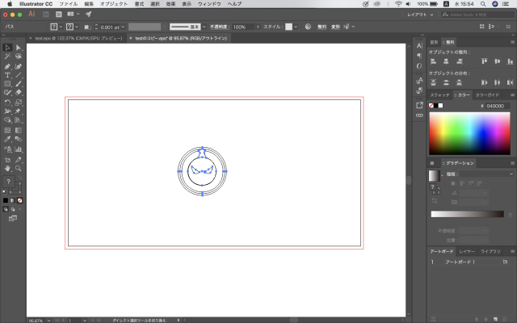

レーザー加工機を使ってみた
レザー加工機で作ったもの
加工したもののデータ
データ作成手順
1.自分が作りたい形をillustratorで描いていきます。
2.ファイル/ドキュメントのカラーモード を選択し、”RGB”にチェックされていることを確認する。
3.自分が描いた絵を選択し、線幅を「0.001」とする。
表示のアウトライン を選択する。画像のようなアウトライン表示に変わる。） ここで表示されている、図形が全て加工対象（加工パス）になります。

カッティングプロッターを使ってみた。